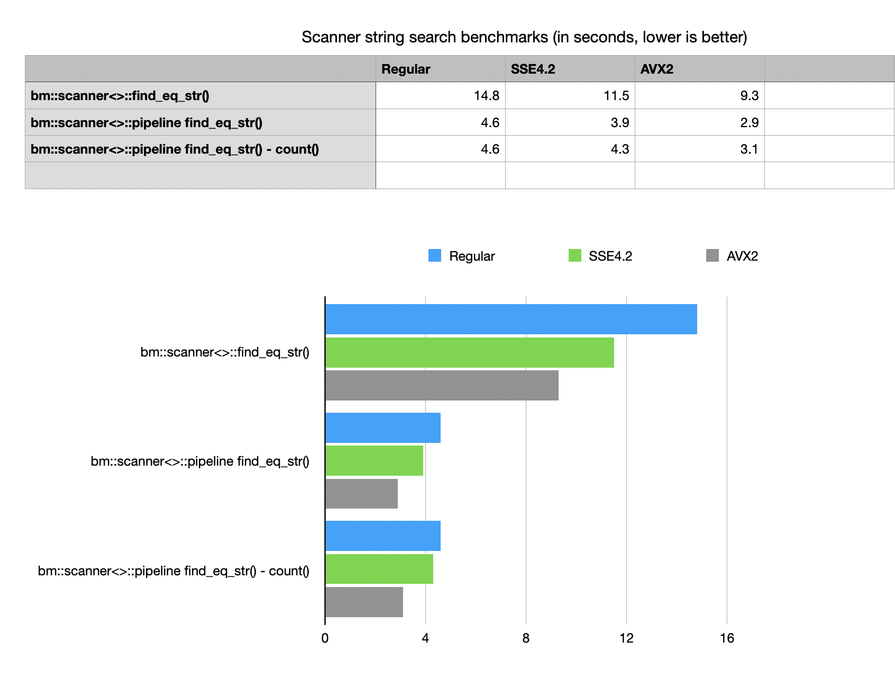

Version 7.6.0
Oct 17, 2021Release Notes
-
fixed regression bug from 7.5.0 in dynamic matrix allocation algorithms of succinct vectors
-
bm::aggregator<>reworked to support new pipeline mode for AND-MINUS ("all this but not that" queries) aggregation, using L1/L2 cache and algorithmic optimizations to run thousands of coordinated aggregations times faster than it was possible in previous version -
bm::scanner<>implements string new string search method for bulk search with bm::aggregator<>::pipeline under the hood. New bm::scanner<>::pipeline can run multiple string searches in unordered succinct string vectors times faster. It also implements new search methods which can be used to run massive queries and construct results (inverted list bit-vectors) or run stat analysis for population count without materializing the result vectors (effectively histogram construction).This new development improves on theidea of using "data as an index", exploiting the properties of bit-sliced (bit-transposed) succinct data structures to facilitate search without building an exlicit inverted index.
-
New example: strsvsample07.cpp added to illustrate use of fast scanner and scanner pipeline 3x times, with synthetic benchmarks showing 3x better performance for bulk search cases. strsvsample07
Example implements a simple synthetic benchmark comparing
bm::scannersearch modes on unsorted, succinct string vector. New pipeline gives 3x improved performance, with extra improvements in optimized SIMD versions.
- Parallel compute engine and thread pools reworked to use Modern C++ approach based on lambdas rather than function pointers. New development lays the internal foundation for BitMagic parallel algorithms to unfold its potential on multi-threaded systems. Fixed instrumentation warnings about possible race conditions.
- Download v7.6.0 (Sourceforge) GitHub